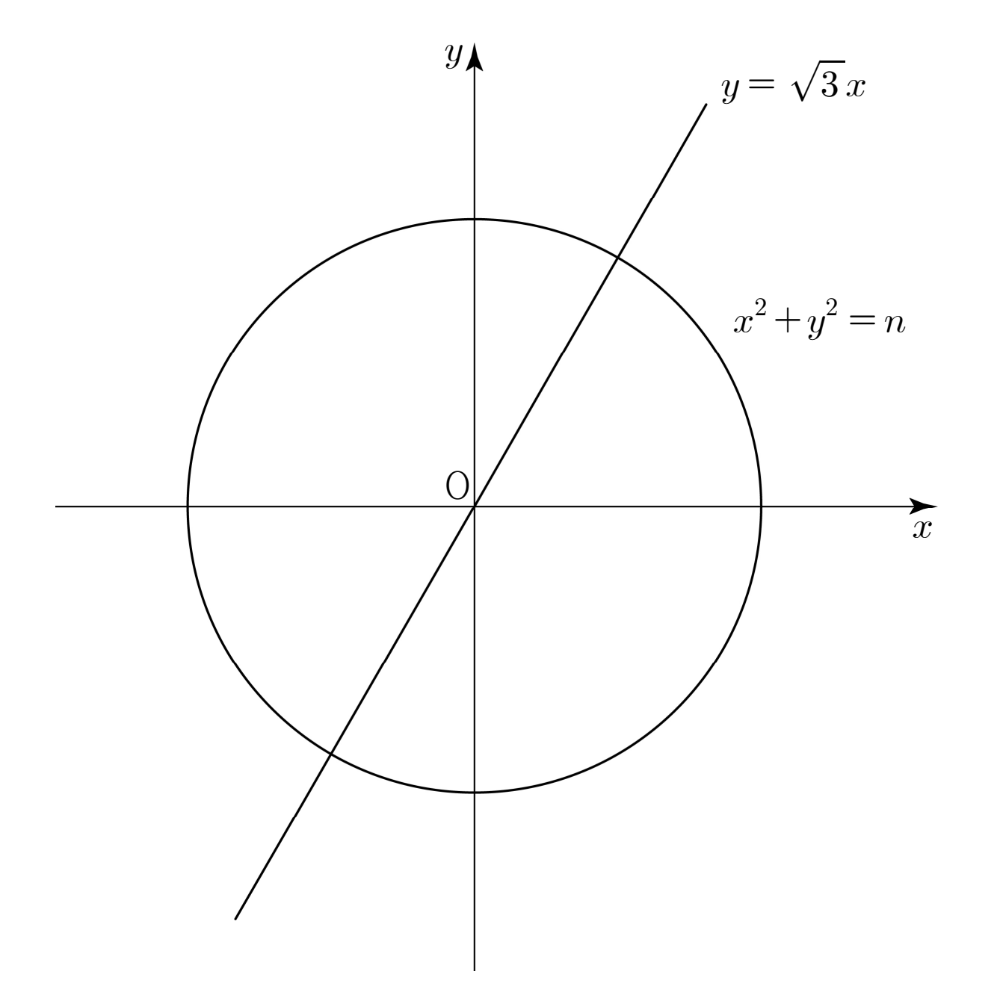

자연수 에 대하여 원 이 직선 와 제사분면에서 만나는 점의 좌표를 이라 하자. 의 값은?
[4점]
① ② ③ ④ ⑤

판단㉠이 제사분면이라고 했으니까 인 쪽만 골라야 해. 의 음수 쪽은 제사분면 점이라 버리는 거야.
일 때 구한 점이 원 위에 있는지 넣어 보면 식이 맞는지 바로 보여.
분모를 유리화하면 이웃한 두 제곱근의 차가 돼. 이렇게 바꿔 두면 더할 때 가운데가 줄줄이 지워지는 거야.
앞 괄호의 과 다음 괄호의 이 짝지어 지워지니까 처음의 과 끝의 만 남아.
주의가 까지라 마지막 괄호는 이야. 끝항을 으로 잡으면 답이 어긋나.